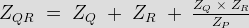
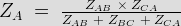
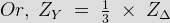
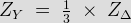
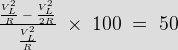
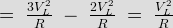
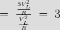
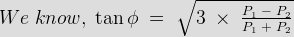
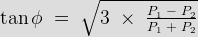

- In delta connection line voltage is equal to phase voltage. For a given phase connected to the particular line which of the statement is true ?
In case of star connection,
Line current = Phase current and Line voltage = √ 3 × Phase voltage .
In case of delta connection,
Line voltage = Phase voltage and Line current = √3 × Phase current. - The delta equation of given star connected impedance zQR is equal to

- A star connected load has three equal impedance each of (40 + j30)Ω If the line current is 5 A then value of line voltage is
| Z P | = √{(402 + 30 2} = 50 Ω
Phase Voltage VP = IL × ZP.
Line Voltage VL = √3VP. - A delta connection contains three equal impedance of 60 Ω. The impedance of the equivalent star connection for each star load will be

 - A balanced star connected load with impedance of 30∠ - 300 ohm is supplied from a 3-phase, 4-wire, 173 volts system, the voltages to neutral being 100∠ -900, 100∠ -300 & 100∠ -1500 V. The current in neutral wire is
Since the applied 3-phase voltage is balanced and the impedance are all equal, so the current also would be balanced, as a result there is no current in the neutral wire.
- A balanced delta connected load has an impedance of 9∠ 30° Ω per phase. What is the impedance per phase of its equivalent star?

- A 3-phase delta connected symmetrical load consumes P watts of power from a balanced supply. If the same load is connected in star to the same supply then what is the power consumption ?
Under Construction
- For a 3-phase load balanced condition, each phase has the same value of _____
The condition of a 3 phase balanced are that – each phase has same value of impedance, resistance and power factor.
- A 3 wire, 3 phase supply feeds a load consisting of three equal resistors. By how much is the load reduced if one of the resistor be removed when the load is in star ?
If one resistor is removed from a 3-Φ, circuit, then the circuit is no longer 3-phase but converted into single phase circuit, having two resistor, each of R ohms connected in series across the supply of VL volts.
Hence the total power consumed = VL 2 / 2R
Reduction in load,
 - Phase voltages of a star connected alternator are ER = 240∠ O° V, EY = 240∠ -120° V & EB = 240 ∠ + 120° V. What is the phase sequence of the system ?
Here ER is reference voltage EY lags behind it by 120°, EB lags behind ER by 240° and EY by 120° So phase sequence is RYB.
- A balanced three Phase Y-connected load has one phase voltage VB = 277 ∠ 45° V. The phase sequence is RYB. The line to line voltage VRY is
VR = 277∠ (45° -120 °) 277∠ -75 °V.
VY = 277∠ (45° + 120°) = 277∠ 165°V
VRY = VA – VB - In delta connected circuit when one resistor is open, then power will be
If one resistor is removed from a 3-Φ delta connected circuit, then the circuit will be converted into single phase circuit having two resistor.
Now power consumed = 2 × V2 / R = 2V2 / R
In case of delta connected circuit, power consumed = 3 × V2 / R
So, power will be reduced

Power will be reduced
 - For balanced star load, if unbalanced line current are IR, IY, IB equal to – j10, -j10 & - j20 respectively, the neutral current will be equal to
All three current will be separated by 120° in space.
So Ineutral = IR ∠ 0° = I Y ∠ 120° = IB ∠ 240° - VRN, VYN & VBN are three phase voltage of a balanced three phase system. If VRN = 200∠ 30° V & VBN = 200∠, -90° V, then phase sequence of the system is
Phase Y lags phase R by (30 + 90)° = 120° so the phase sequence RBY.
- A 25 MVA, 11 KV alternator is supplying full load at a point of 0.75 lagging. Determine the percentage increase in earning capacity when it is operated at improved pf of 0.96 lagging.
Power supplied of any pf = Rating × operating of increase in earning capacity = power supplied at improved pf – power supplied at given pf.
- In two wattmeter method of power measurement if the total power is measured by one wattmeter only then pf of the system is
If the total power is measured by one wattmeter method instead of two wattmeter method, that means one wattmeter readings is zero.

So, cosφ = Power factor = cos60° = 0.5. - Three identical inductors are connected in delta with a 220 V, 50 Hz, 3-&Phi, supply. If the phase current is 24 A, then what is the value of each of the inductance ?
Inductive reactance, XL = VL / IP
So, XL = 2πfL. - A balanced 3-φ star connected load is fed from a 208 V, 3-φ supply. Each load has resistance of 35 Ω. The total power is
Each phase voltage = 208 / √3 = 120 V
IR = 120∠ 0° / 35 = 3.428∠ 0°
As balanced load,
|IR| = |IY| = |IB| = 3.428.
Total power = 3I2R = 1236 W. - In a 3-phase delta connection, two wattmeter method is used to measure the power; if readings of two wattmeters are 28.13 KW & 13.31 KW, the power factor of connection will be

Power factor = cosφ. - In above question, if circuit efficiency is 90%. What will be output power ?
Output power = efficiency × (P1 + P2).
Design with  by SARU TECH
by SARU TECH
www.sarutech.com
Content Credited to electrical4u.com
Online Electrical Engineering Study Site